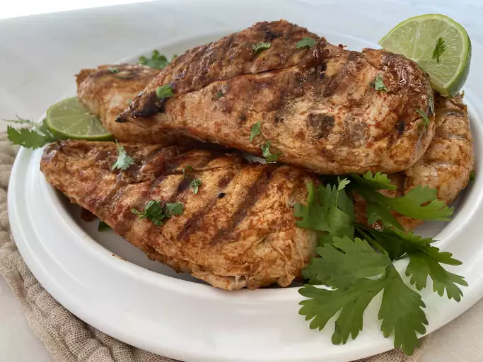

Pollo Asado

"This pollo asado is super easy and super good."
This spicy, marinated broiled chicken dish is the same as that of a well-known restaurant chain's Tequila Lime
Chicken.
Enjoy! Serve with rice and pico de gallo salsa, if desired.
Ingredientes
- ½ cup chopped onion
- ¼ cup olive oil
- ¼ cup lime juice
- 2 teaspoons white vinegar
- 2 teaspoons ground cumin
- 2 cloves garlic, smashed
- 2 small dried red peppers
- 1 teaspoon sea salt
- ½ teaspoon ground black pepper
- 4 boneless, skinless chicken breasts
Steps
- Place onion, olive oil, lime juice, vinegar, cumin, garlic, red peppers, salt, and black pepper in a
blender.
Blend until smooth. Place chicken in a container or resealable plastic bag and pour marinade on top;
toss to coat.
Marinate in the refrigerator for 2 to 24 hours.
- Preheat an outdoor grill for medium-high heat and lightly oil the grate.
- Grill chicken until no longer pink in the center, 6 to 7 minutes per side, depending on thickness.
An instant-read thermometer inserted into the centers should read at least 165 degrees F (74 degrees C).
Inicio